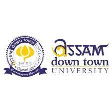

Web Development Intern
 Bharat Intern | 10/2023-Present
Bharat Intern | 10/2023-Present
Had experience of building responsive web layouts and designs for website.
Skills: HTML, CSS, JavaScript
 Adtu A-Connect App Student Council | 10/2023-Present
A-Connect, the official student interface app of Assam Down Town University, entails managing the backend af app operations, app development, and executing social media campaigns within the university community using the A-Connect app.
Bharat Intern | 10/2023-Present
Had experience of building responsive web layouts and designs for website.
Skills: HTML, CSS, JavaScript
 Guwahati Biotech Park | 03/2023-03/2023
Guwahati Biotech Park | 03/2023-03/2023
Protein Extraction, Purification, FPLC (Fast Protein Liquid Chromatography) Analysis, SDS-PAGE (Sodium Dodecyl-sulfate polyacrylamide gel electrophoresis) Technique
Skills: Research skills
 Gauhati University | 02/2023-02/2023
Gauhati University | 02/2023-02/2023
Skills: Research skills